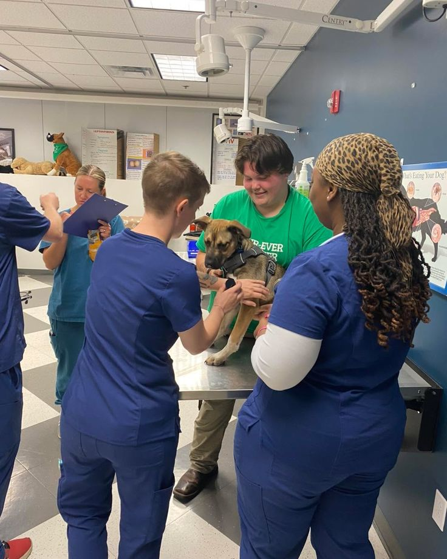
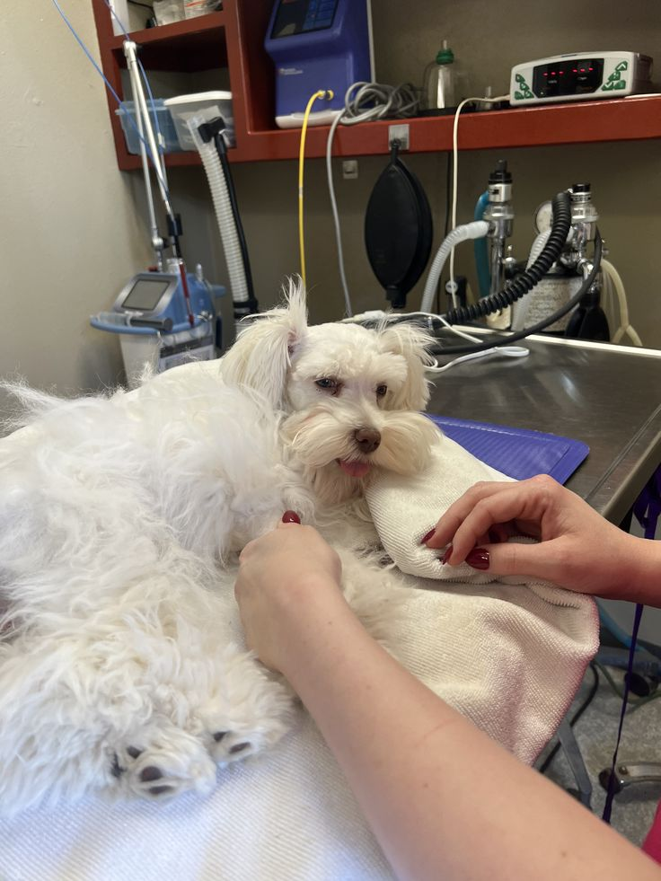
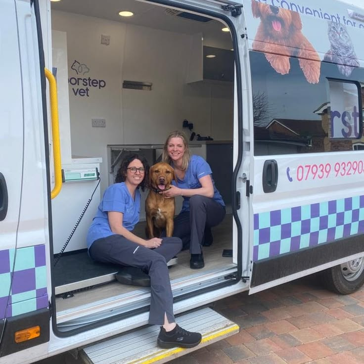

Our Services
Durban Paws Rescue runs three core programmes. Details on each are below.
Adoption

Every animal in our care is vaccinated, sterilised, and health-checked before adoption. Our adoption process includes an application form, a short home-suitability chat, and a follow-up check-in two weeks after adoption to make sure the match is working well.
- Adoption fee: from R850, which covers sterilisation, vaccinations, and deworming.
- Applications reviewed within 3 working days.
- Post-adoption support available for the first three months.
Fostering

Foster carers provide short-term homes for animals recovering from illness, injury, or that are too young for adoption. We supply food, bedding, and veterinary cover for the duration of the foster period.
- Foster periods typically range from 2 to 8 weeks.
- Full veterinary and food support provided by the organisation.
- Training and an orientation session provided before the first placement.
Sterilisation Drives

We partner with local veterinary clinics to run monthly community sterilisation drives in under-resourced areas around Durban, offering the procedure at no cost to pet owners who qualify.
- Held on the first Saturday of every month, location rotates by area.
- Free for qualifying households; sponsored slots available for others.
- Includes basic vaccinations where funding allows.